ProCam — Официальный брендбук и логотипы экосистемы
Индивидуальные фирменные знаки для трёх направлений: ProCam CCTV, ProCam Radar и ProCam VMS, а также полный набор по 26 вариаций каждого (78 логотипов в векторном SVG и растровом PNG HD).


ProCam CCTV
Мастер-бренд монтажа и проектирования IP-видеонаблюдения, PoE и 4K оптики
1. Без текста (Только иконка / знак)


2. Горизонтальный логотип (Знак + Название продукта)


3. Полный горизонтальный логотип (С подписью RU / KZ / EN)


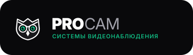


4. Вертикальные и текстовые версии (Для визиток, сторис, наклеек)
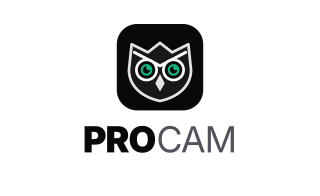


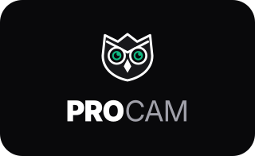


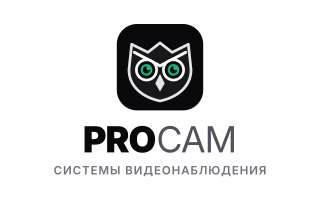


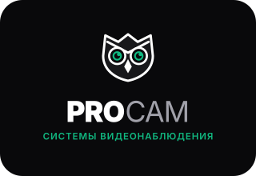


ProCam Radar
Инженерный комплекс поиска IP-камер, мультисети /32 и подбора свободных IP
1. Без текста (Только иконка / знак)
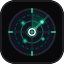


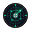


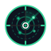


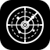


2. Горизонтальный логотип (Знак + Название продукта)


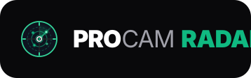


3. Полный горизонтальный логотип (С подписью RU / KZ / EN)
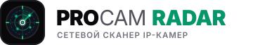


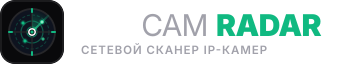


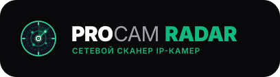


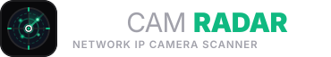


4. Вертикальные и текстовые версии (Для визиток, сторис, наклеек)
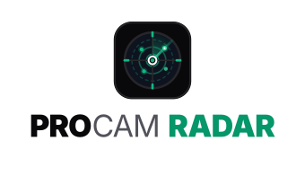


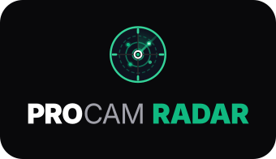


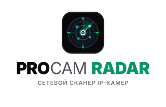


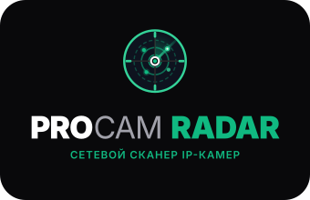


ProCam VMS
Клиентская станция видеомониторинга, мультиэкранная видеостена, архив NVR и экспорт FFmpeg
1. Без текста (Только иконка / знак)
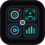


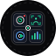


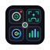


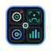


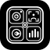




2. Горизонтальный логотип (Знак + Название продукта)


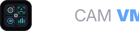


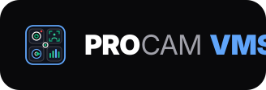




3. Полный горизонтальный логотип (С подписью RU / KZ / EN)
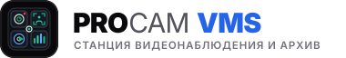


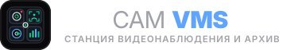


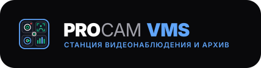


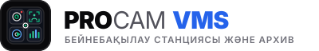


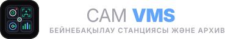


4. Вертикальные и текстовые версии (Для визиток, сторис, наклеек)
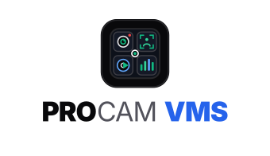


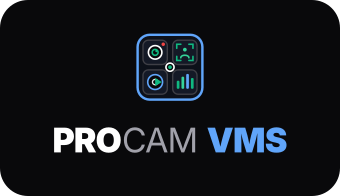


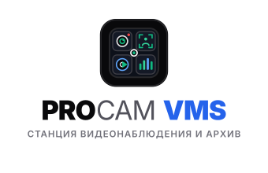


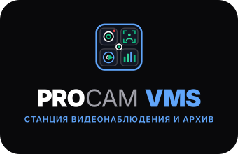